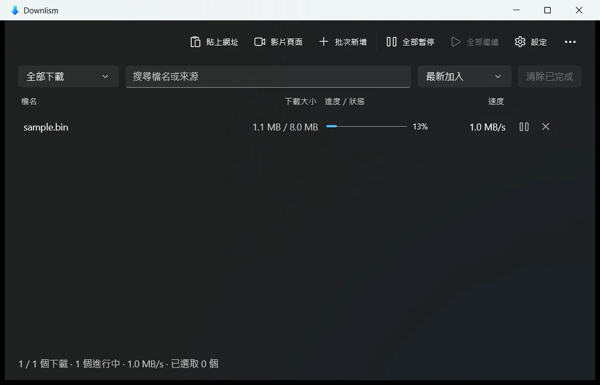
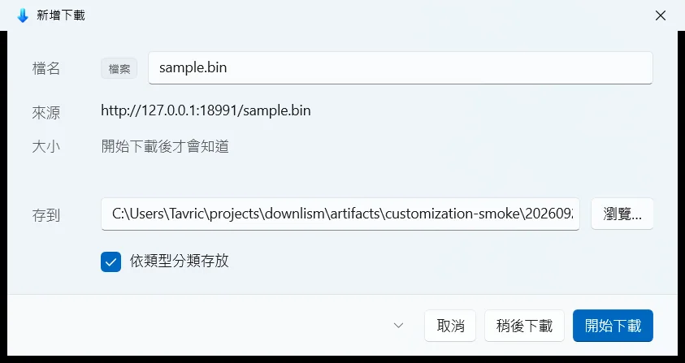
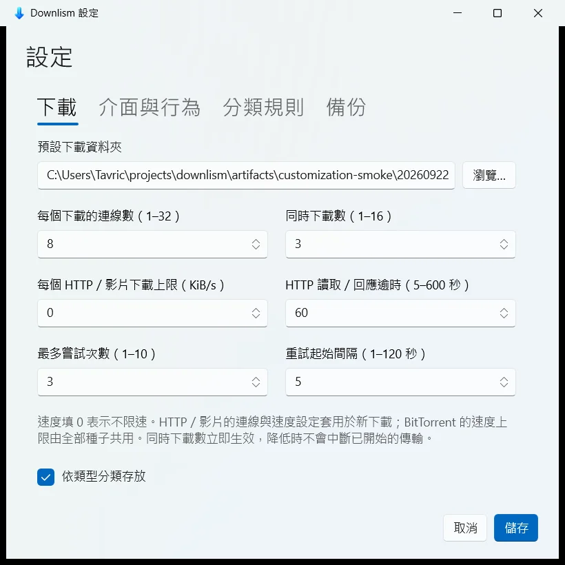

檔案與網址
貼上連結，或從 Chrome、Edge 接手。支援分段下載、斷點續傳、速度上限和 SHA-256 驗證。
貼上網址，或讓 Chrome、Edge 把下載交過來。Downlism 把檔案、影片和種子檔放進同一份清單，該暫停就暫停，回來從中斷處繼續。

自動重試斷線、逾時和暫時性的伺服器錯誤會接著重試。
速度看得準傳輸停止時，即時速度會降到 0。
清單留得住關掉視窗後可留在系統匣，重新啟動也能找回紀錄。
三種引擎處理三種來源，共用佇列、暫停續傳、重試與下載紀錄。開著一個視窗就夠了。
貼上連結，或從 Chrome、Edge 接手。支援分段下載、斷點續傳、速度上限和 SHA-256 驗證。
貼上影片頁面，下載前挑選來源實際提供的畫質或音訊格式。需要的工具會在首次使用時取得。
磁力連結和 .torrent 直接加入清單。下載完成時停止做種；上傳速率仍有上限。
接手下載時，小視窗讓你確認檔名、資料夾，以及現在開始還是稍後再下。主視窗不用為了這件事跳到最前面。
不想每次確認，也能勾選以後直接開始。Chrome、Edge 的擴充功能安裝教學會在安裝後出現。
查看擴充功能設定

每個下載預設使用 8 條連線，同時最多下載 3 個。這兩個數字分開設定，速度上限、逾時和重試次數也能調。
下載位置與分類規則可以自己決定。設定還能匯出 JSON，換機器時再匯入。
剪貼簿監看只會詢問。複製一個網址，不代表現在就要下載。
會重試的錯誤才重試。404、403、410 會停下來顯示原因，不讓下載一直空轉。
預設收進系統匣，瀏覽器仍可交來新的下載。也能在設定裡改成直接結束。
下載紀錄留在 SQLite，分段續傳資訊存於檔案旁；登入用的 Cookie 不會寫到磁碟。
Downlism 0.10.2 是預覽版。核心下載功能、Chrome 與 Edge 接手、影片和 BitTorrent 都已完成。
Downlism、Flowlism、Peeklism 分開安裝與更新。